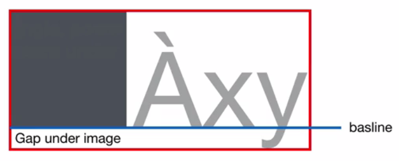
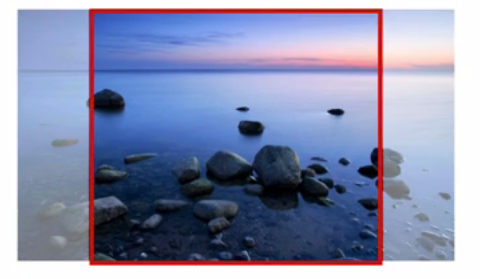
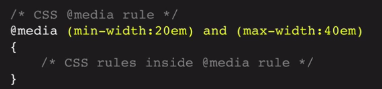
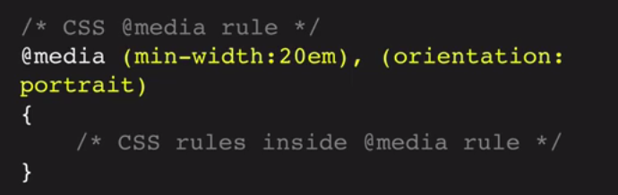
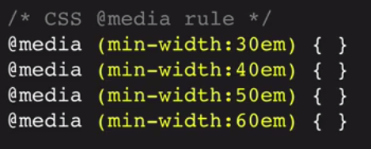
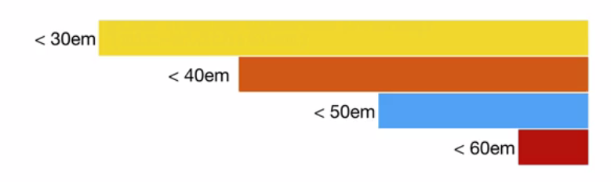
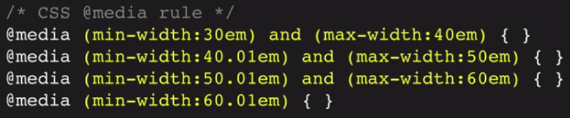
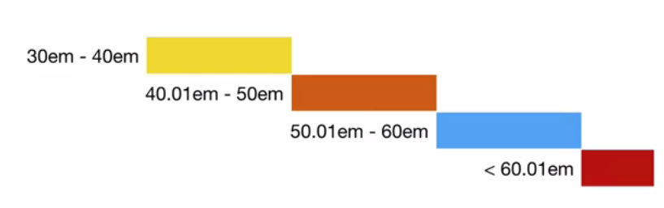

RWD
Responsive Web Design
Created by Saurav Kumar
"with great website comes greater responsivity"
Content
- Overview
- Concept
- Ingredients
- Resources
Overview
Artist - Canvas
Web Developers - Medium
- Dimension is required
- Establish a boundary

Browser - our canvas
- Imperfections
- Wide range of devices

Failed attempts to cater to all devices
- Quarantined URL
- Separate mobile sites

Ethan Marcotte
- Architecture
- Artists experiment with surfaces that react with voice
- Smartglass - It responds to presence of occupants in a meeting room by
Ethan Marcotte advocates we shift our design thinking to appropriate constraints associated with coding for an array of devices: using fluid grids, flexible images, and media queries, he shows us how to embrace the “ebb and flow of things” with responsive web design.
Concept
Prerequisites
- HTML
- CSS
- Passion
Unit


Principles - What is RWD?
An approach to web design aimed at crafting web applications to provide an optimal viewing and interaction experience—easy reading and navigation with a minimum of resizing, panning, and scrolling—across a wide range of devices
- Flexible grid based layout - allows layout to reflow to the screensize of any device
- Flexible content - allows content such as images, videos, text to reflow with the layout
- CSS3 Media Queries - allows to control each variation of the layout so that content is displayed optimally in all devices
Terms - RWD confused with
- Progressive Enhancement It is the principle if starting with rock-solid foundation and then adding enhancements if you know user-agents can handle the improved experience.
- Adaptive Web Design It is just another term for progressive enhancement, it takes into account varying levels of markup, css, js and assitive tech. support. It focuses on broader approach than RWD.
- Mobile First It is all about designing the entire experience for small screen devices, prioritizing the functionalities based on constraints of smaller screen. Because, it's always much harder to design for smaller screen after wider screen.
three shades
Ingredients
What makes up a responsive web design?
- Flexible Grid
- Flexible Content
- Media Queries
Flexible grid

Grid - Components
.row{ clear: both; overflow: hidden }.col{ overflow: hidden; margin-bottom: 1em }.m-2col { width: 100% }.m-1col { width: 46% }
Examples
Responsive - Images

Inline images
Can be reduced and increased in size
but not beyond its maximum size
img{ max-width: 100%; vertical-align: middle; border: 0 }
Examples
Background images
div{ background-size: contain }div{ background-size: cover }How can we create responsive background images?
Methods for responsive background images
This method sets a height on the container, and lets the background image "crop" as the layout is reduced in width
.responsive-img { width: 100%; height: 300px; background-image: url(bkg_img.jpg); background-size: cover; background-position: center }It uses percentage value for height, and the height is a ratio of the with. This ensures that the aspect ratio remains correct, no matter how wide or narrow the container becomes
.responsive-img { width: 100%; padding-bottom: 50%; background-image: url(bkg_img.jpg); background-size: cover; background-position: center }How did we get this 50% for padding-bottom?
Examples
Responsive video
3 steps method
- Wrap the video inside a parent container
- Style the video container so that it has the correct aspect ratio
- Make the video stretch to fit the dimensions of the box
Examples
Responsive Form
Demo by exampleMedia Queries
A module from the CSS3 specification
Usage
 Breakpoints
Points where RWD layout adapts or changes based on specific media queries
How can one determine the breakpoints?
Devices or ...?
Visualize
 Visualize
 Test - RWD


Caution
Workflow
DEMO
Resources
SitePoint

Smashing Magazine